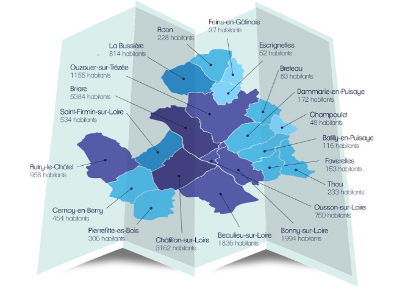
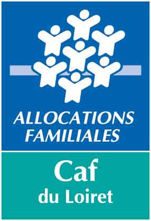

Des interlocuteurs clés
Mairies
Adressez-vous à votre commune pour les inscriptions dans les écoles, la restauration scolaire, l'accueil de loisirs ou l'inscription sur la liste électorale.
Adon
9 route de la Bussière
45230 ADON
📞 02 38 35 93 52
📧 mairie.adon@orange.fr
Horaires :
Mar 14h-17h30
Ven 10h-12h et 15h-17h30
Autry-le-Châtel
8 rue de la Mairie
45500 AUTRY-LE-CHÂTEL
📞 02 38 36 80 59
📧 secretariat.mairie@autrylechatel.fr
🌐 www.autry-le-chatel.fr
Horaires :
Lun-Ven 14h-17h
Batilly-en-Puisaye
14 Grande rue
45420 BATILLY-EN-PUISAYE
📞 02 38 31 96 98
📧 batilly-en-puisaye.commune-de@wanadoo.fr
Horaires :
Mar 9h-12h
Ven 14h-17h
Beaulieu-sur-Loire
10 place de l'église
45630 BEAULIEU-SUR-LOIRE
📞 02 38 35 80 48
📧 mairie@beaulieu-sur-loire.fr
Horaires :
Lun 9h-14h
Bonny-sur-Loire
15 avenue du Gal Leclerc
45420 BONNY-SUR-LOIRE
📞 02 38 29 59 00
📧 mairie@bonny-sur-loire.fr
🌐 www.bonny-sur-loire.fr
Horaires :
Mar, Mer, Ven 9h-12h et 13h45-17h45
Jeu, Sam 9h-12h
Breteau
1 rue de Champoulet
45250 BRETEAU
📞 02 38 31 94 66
📧 mairie.breteau@orange.fr
Horaires :
Lun, Ven 9h-12h
Briare
place Charles de Gaulle
45250 BRIARE
📞 02 38 31 20 08
📧 mairie@villedebriare.fr
🌐 www.mairie@villedebriare.fr
Horaires :
Lun-Jeu 8h30-12h30 et 13h30-17h
Ven jusqu'à 16h30
Cernoy-en-Berry
2 rue de Concressault
45360 CERNOY-EN-BERRY
📞 02 38 31 47 02
📧 secretairiat@cernoy-en-berry.fr
🌐 www.cernoy-en-berry.fr
Horaires :
Mar, Mer, Ven, Sam 8h30-12h
Champoulet
25 rue Principale
45420 CHAMPOULET
📞 02 38 31 95 09
📧 commune-de-champoulet@orange.fr
Horaires :
Lun, Mer 13h30-17h
Châtillon-sur-Loire
25 rue de l'hôtel de ville
45360 CHÂTILLON-SUR-LOIRE
📞 02 38 31 40 54
📧 mairie@chatillonsurloire.fr
🌐 www.chatillon-sur-loire.com
Horaires :
Lun-Ven 8h30-12h et 13h30-17h
Dammarie-en-Puisaye
3 rue de la Mairie
45420 DAMMARIE-EN-PUISAYE
📞 02 38 31 92 26
📧 commune-de-dammarie-en-puisaye@wanadoo.fr
Horaires :
Lun (sem. paire) 9h-12h30 et 13h-17h30
Mer (sem. impaire) 16h-18h
Jeu 9h-12h30 et 13h30-18h
Escrignelles
Le Bourg
45250 ESCRIGNELLES
📞 02 38 31 92 70
📧 mairie.escrignelles@orange.fr
Horaires :
Mar 9h-12h30
Ven 9h-12h30 et 13h-17h30
1er sam du mois 10h-12h
Faverelles
3 route de Thou
45420 FAVERELLES
📞 02 38 31 62 76
📧 mairie.faverelles@orange.fr
Horaires :
Mar 14h-18h
Jeu 9h-12h30 et 13h-17h30
Feins-en-Gâtinais
Le Bourg
45230 FEINS EN GATINAIS
📞 02 38 35 94 45
📧 mairie.secretariat@feinsengatinais.fr
Horaires :
Lun, Mer 9h-14h
La Bussière
1 rue de Briare
45230 LA BUSSIERE
📞 02 38 35 90 68
📧 contact@labussiere45.fr
🌐 www.labussiere45.fr
Horaires :
Lun, Ven 14h-17h30
Mar 9h-12h et 14h-17h30
Jeu 9h-12h
Ousson-sur-Loire
1 rue de la Loire
45250 OUSSON-SUR-LOIRE
📞 02 38 31 44 56
📧 mairie@oussonsurloire.fr
Horaires :
Lun-Ven 9h30-17h30
Ouzouër-sur-Trézée
1 rue Grande
45250 OUZOUER-SUR-TRÉZÉE
📞 02 38 31 93 90
📧 mairie-secretariatg@ouzouer-trezee.fr
🌐 www.ouzouer-sur-trezee.fr
Horaires :
Mar, Ven 10h-12h et 14h-17h
Mer 10h-12h
Lun et Jeu sur RDV uniquement
Pierrefitte-ès-Bois
3 place du Monument
45360 PIERREFITTE-ÈS-BOIS
📞 02 38 31 47 09
📧 mairie.pierrefitteesbois@orange.fr
Horaires :
Lun, Mar, Jeu, Ven 8h30-12h
Saint-Firmin-sur-Loire
32 Grande rue
45360 SAINT-FIRMIN-SUR-LOIRE
📞 02 38 37 08 74
📧 mairie.accueil@stfirminsurloire.fr
Horaires :
Lun 13h30-17h30
Mar-Ven 9h-12h
Thou
12 route Impériale
45420 THOU
📞 02 38 31 62 20
📧 secretariat@thou.fr
Horaires :
Mer 8h-14h
Ven 13h30-19h
Communauté de communes Berry Loire Puisaye
42 rue des Prés Gris, 45250 BRIARE
📞 02 38 37 03 84
📧 contact@cc-berryloirepuisaye.fr
🌐 www.cc-berrloirepuisaye.fr

Partenaires institutionnels

CAF du Loiret
Caisse d'Allocations Familiales du Loiret
2 place Saint Charles
45946 ORLÉANS Cedex 9
📞 3230
🌐 www.caf.fr
MSA Beauce Cœur de Loire
Mutualité Sociale Agricole
5 rue Chanzy
28037 CHARTRES Cedex
📞 02 37 99 99 99
🌐 https://bcl.msa.fr
Agence Départementale des Solidarités
Service de proximité du Département du Loiret
Accompagnement personnalisé
📞 02 38 25 45 45
🌐 www.loiret.fr